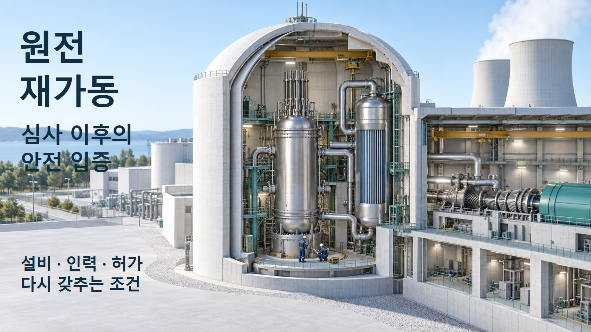
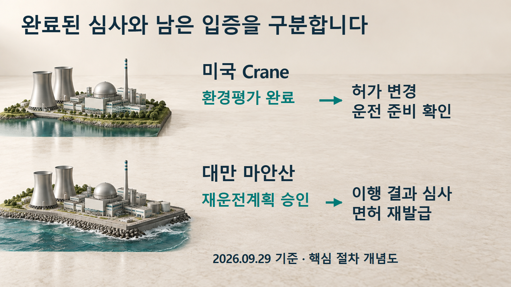
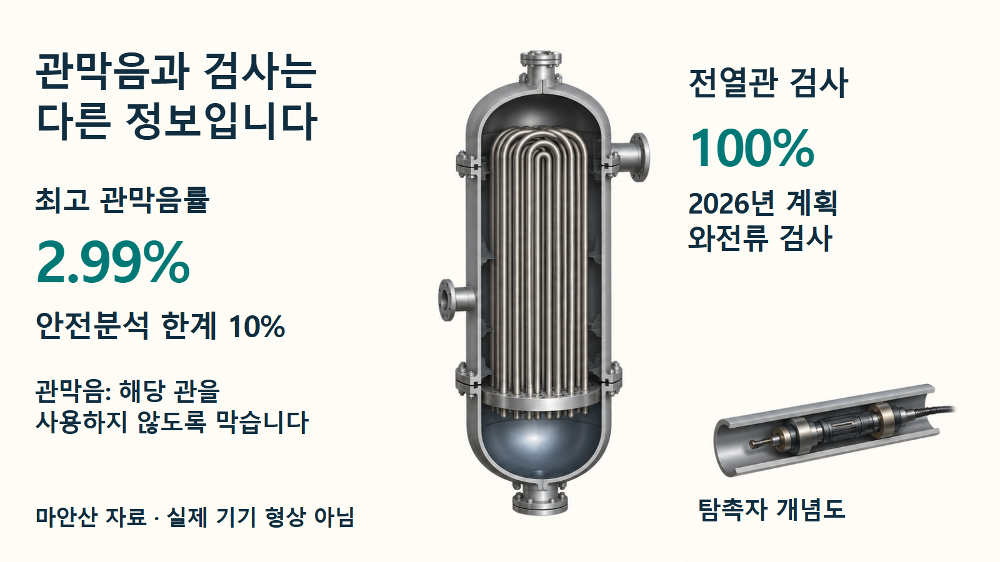

원전 재가동 · 인허가
원전 재가동, 심사 완료 뒤에 남은 일
Crane의 환경평가와 마안산의 계획 승인을 구분하고, 실제 운전에 필요한 증거를 살펴봅니다.
정지했던 원전이 다시 전기를 만들기까지는 여러 종류의 판단이 필요합니다. 2026년 9월 미국 Crane과 대만 마안산에서 나온 소식도 같은 단계의 승인이 아닙니다. 두 사례를 따라가면 “무엇이 승인되었는가”에 더해 “무엇이 실제로 확인되었는가”를 읽는 방법이 보입니다.

같은 재가동 소식, 서로 다른 결정
미국 원자력규제위원회(NRC)는 9월 25일 Crane Clean Energy Center의 운전 복귀를 위한 환경평가와 “중대한 환경영향 없음” 판단을 공고했습니다. 대만 핵능안전위원회는 하루 전인 9월 24일 마안산 원전의 재운전계획을 승인했습니다. 전자는 제안된 연방 조치의 환경영향을, 후자는 설비·인력·문서를 복원하는 계획의 적정성을 판단한 것입니다. 두 발표 모두 그 자체로 최종 재가동 허가를 뜻하지 않습니다.[1][5]
Crane은 과거 스리마일섬 1호기입니다. 1979년 사고가 났던 2호기와는 다른 원자로입니다. 마안산은 대만의 1·2호기 두 원자로를 대상으로 합니다. 원전 이름만 비교하기보다 어떤 호기와 법적 상태에 관한 결정인지 먼저 구분해야 합니다.[2][5]
허가 기간이 남아 있어도 운전할 수 없는 이유
Crane의 갱신운전허가 종료일은 2034년 4월 19일입니다. 하지만 영구정지와 원자로에서의 연료 제거를 신고한 뒤에는 기존 허가로 원자로를 운전하거나 용기 안에 연료를 장전·보유할 수 없습니다. 허가가 남아 있다는 말과 발전할 권한이 있다는 말이 같지 않은 이유입니다.[2, p.1-1]
사업자는 이 제한의 면제와 운전허가 변경을 요청했습니다. 환경검토와 안전심사는 병행되며, 현장에서는 복원한 설비와 운영체계가 실제로 준비됐는지도 검사합니다. 환경평가가 다루는 범위에는 물·생태계뿐 아니라 건강, 폐기물, 가정사고의 영향도 포함됩니다. 따라서 환경평가를 의미 없는 서류 절차로 볼 수도, 다른 안전심사를 모두 대신하는 승인으로 볼 수도 없습니다.[2, pp.1-2~1-3][3, pp.10~13]
마안산은 계획의 실행 결과를 다시 심사받습니다
마안산 1·2호기의 운전허가는 각각 2024년 7월과 2025년 5월에 만료됐습니다. 타이파워는 2026년 3월 면허 재발급을 신청하면서 재운전계획을 먼저 냈습니다. 규제기관은 세 차례 심사에서 589건의 의견을 제기했고, 답변으로 계획상의 쟁점이 설명됐다고 판단했습니다. 589건은 심사의견 수이며, 현장 결함 589개를 고쳤다는 뜻은 아닙니다.[5, pp.1~4]
이제 승인된 계획을 실행하고 결과보고서를 제출해야 합니다. 노화평가와 노화관리, 시간제한 노화분석, 최종안전성분석보고서·운전기술지침의 변경, 방사선 및 내진 안전 자료도 함께 심사받습니다. 규제기관은 그 결과를 종합해 면허 재발급 여부를 판단합니다.[5, pp.2~3·12]
| 비교할 질문 | 미국 Crane | 대만 마안산 |
|---|---|---|
| 법적 출발점 | 영구정지 신고로 운전 권한이 제한된 기존 허가 | 만료된 운전면허의 재발급 신청 |
| 9월 판단 | 제안된 연방 조치의 환경영향 | 설비·인력·문서 복원 계획의 적정성 |
| 후속 증거 | 허가 결정, 실제 검사 결과와 미결 사항 종결 | 계획 실행 결과, 관련 안전 기술 심사와 면허 결정 |
미국은 환경 결정 이후에도 허가 조건과 준비 상태 확인을, 대만은 계획 실행과 관련 기술 문서의 종합 심사를 이어갑니다.

2.99%, 10%, 100%는 각각 무엇을 뜻할까요
마안산의 계획이 무엇을 다루는지 증기발생기 사례로 살펴보겠습니다. 증기발생기는 원자로에서 받은 열을 다른 물 계통에 전달하는 열교환기입니다. 전열관의 상태가 적절하지 않으면 해당 관을 막아 사용에서 제외할 수 있는데, 전체 관 가운데 막은 관의 비율을 관막음률이라고 합니다. 심사보고서에 나온 최고 관막음률은 2.99%, 안전분석서의 한계는 10%입니다.[5, p.8]
그러나 2.99%가 10%보다 낮다는 사실만으로 앞으로도 모든 관이 건전하다고 결론낼 수는 없습니다. 관막음률은 사용에서 제외한 관의 비율을, 검사는 남은 관의 상태를 확인하는 일을 말합니다. 타이파워는 2026년 두 호기 전열관에 대해 100% 와전류검사를 계획했습니다. 와전류검사는 금속에 유도되는 전기적 반응의 변화를 이용해 결함을 찾아보는 비파괴검사입니다. 현재 상태를 나타내는 비율과 앞으로 수행할 검사의 범위를 구분해야 합니다.[5, p.8]
관막음률 2.99%는 현재 상태, 10%는 분석상의 한계, 100%는 2026년 계획된 검사의 범위를 나타냅니다.

기계만 고치면 준비가 끝나는 것은 아닙니다
미국 재가동 검사지침 IMC 2562는 설비의 기능 복원 외에도 운전원 자격과 훈련, 실제 설비에 맞는 모의제어반, 정비 인력, 근무시간, 방호·비상대응, 정지 때문에 미뤄 둔 사항을 검사 대상으로 듭니다. 마안산도 운전원 강화 훈련과 세계원자력발전사업자협회(WANO)의 모의훈련 관찰을 계획했습니다. 기록상의 자격과 팀이 실제 상황에 대응할 준비를 함께 확인하는 셈입니다.[3, p.11][5, pp.6~7]
시험에도 순서와 조건이 있습니다. 마안산 심사보고서는 연료장전, 증기 공급 또는 특정 계통 구성이 있어야 가능한 시험을 구분합니다. 지금 수행할 수 없는 기능검증은 목록으로 관리하고 조건이 충족됐을 때 시행합니다. 미실시, 조건 때문에 이연, 실패, 완료는 각각 다른 상태입니다.[6, pp.10~12]
운전 재개 직후에는 운영지표도 조심해서 읽어야 합니다. IMC 2562는 최근 4개 분기의 임계운전 시간이 2,400시간 미만이면 비계획 정지·출력변경 지표가 유효하지 않은 예를 제시합니다. 오랫동안 정지해 사건이 적었다는 사실만으로 운전 중의 안전성까지 설명할 수는 없습니다.[3, p.12]
다음 소식에서는 완료의 근거를 확인합니다
Crane의 2026년 2월 검사계획에는 2027년까지의 검사 일정이 나옵니다. 마안산도 2027년 2분기 1단계 실행 결과보고서 제출과 같은 해 중반 격납건물 종합누설률시험을 계획합니다. 모두 작업이나 자료 제출의 목표이며 발전 재개 확정일이 아닙니다. 특히 검사 일정표는 실제 수행·합격 보고서를 대신하지 않습니다.[4][5, p.9][6, p.12]
재가동 소식의 의미를 판단하려면 승인 문서의 대상, 실제 시험·검사 결과, 남은 조건을 이어서 읽어야 합니다. Crane에서는 면제·허가변경 결정과 준비 상태 검증을, 마안산에서는 계획 실행 결과와 안전 기술 심사·면허 재발급 결정을 확인하는 것이 다음 단계입니다. 두 나라의 법적 경로를 똑같이 취급할 수는 없습니다. 다만 실제 준비를 보여 주는 증거가 필요하다는 점은 공통적입니다.[2][3][5]